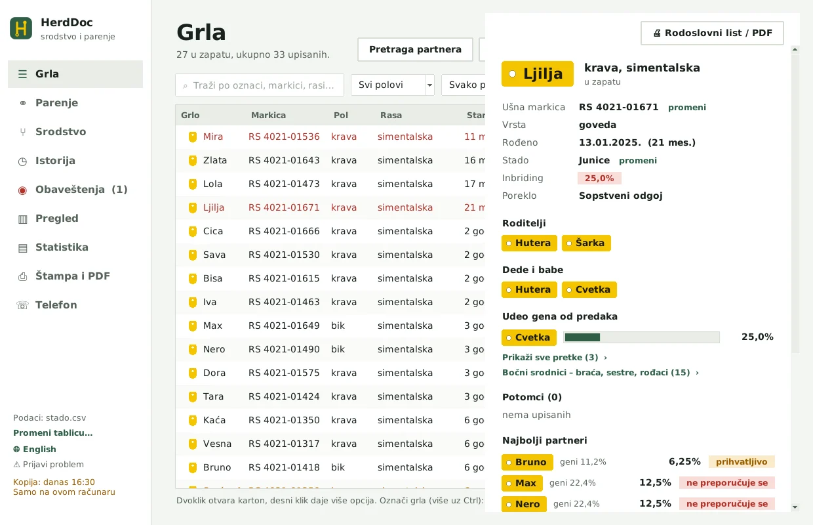

🐄
Teljenja i ter
Spisak krava koje treba da se tele ove nedelje i onih koje treba proveriti na ter – na računaru i na telefonu.
HerdDoc pamti svako osemenjavanje, teljenje, lečenje i litar mleka, podseća te na ter i očekivano teljenje i pomaže da izabereš bika koji nije u srodstvu sa kravom.
Windows 10/11 + aplikacija za telefon · radi bez interneta · 6 jezika

Umesto sveske i razbacanih papira, svaka krava, junica, tele i bik ima svoj karton. U kartonu je sve na jednom mestu:
Spisak krava koje treba da se tele ove nedelje i onih koje treba proveriti na ter – na računaru i na telefonu.
Upis mleka po kravi, laktacija, procena za 305 dana i trošak po litru mleka iz finansija farme.
Za svaku kravu bikovi koji su joj najmanje srodni i očekivani inbriding teleta.
Kad upišeš osemenjavanje, HerdDoc sam izračuna očekivano teljenje i stavi ga u obaveštenja. Ako se krava vrati u ter, vidiš to na vreme i ne gubiš ciklus. Na ekranu „Danas“ na telefonu odmah vidiš šta treba uraditi u štali. Za brzu računicu za jednu kravu koristi besplatan kalkulator teljenja.
Ako kravu osemeniš bikom koji joj je rod, tele može biti slabije, sporije raste, a junica kasnije teže ostaje steona. HerdDoc za svako grlo računa koeficijent inbridinga po Rajtovoj metodi i za svaku kravu predlaže bikove sa kojima je srodstvo najmanje. Više o tome pročitaj u vodiču Rodoslov i inbriding.
Aplikacija za telefon otvara karton krave kad skeniraš minđušu kamerom. Upišeš osemenjavanje, lečenje ili mleko, a podaci se usklade sa računarom kad se veza vrati. Radnici imaju svoje šifre, a program pamti ko je šta upisao.
Postojeću tablicu grla iz Excel-a ili CSV fajla uvezeš u program, a podatke uvek možeš da izvezeš nazad u Excel. Za veterinara i otkup štampaš spisak stada, a za prodaju priplodnog grla rodoslovni list u 4 kolena.
Steonost krave traje prosečno 283 dana, obično između 275 i 290 dana, zavisno od rase i pola teleta. Tačan datum izračunaj u našem kalkulatoru teljenja.
Ciklus teranja kod krava traje oko 21 dan. Ako krava posle osemenjavanja nije ostala steona, ter se obično vraća 18–24 dana kasnije. HerdDoc te podseća kada da proveriš.
Ne. HerdDoc je evidencija farme: karton grla, rodoslov, teljenja, mleko i zdravlje. Zvanične prijave i dalje radiš kao i do sada, ali sve podatke imaš na jednom mestu i lako ih nađeš.
Prvih 30 dana sve je otključano, a posle toga je besplatno do 20 grla. Za veća stada paketi počinju od 49 € godišnje ili 5 € mesečno.
Posle toga besplatno do 20 grla. Za veća stada od 49 € godišnje.